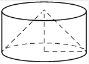

Авторский разбор и аудит предварительны; внешней экспертизы нет.
Модель автора: claude-opus-5-5 (opus; effort=low); в основных частотах: True ·
Впишите правильный ответ.
| Цилиндр и конус имеют общие основание |  |
КЭС: 7.4 Тела и поверхности вращения
6
| ID / вход | Действие | Результат | Локальные KC |
|---|---|---|---|
| s1 · condition | Найти образующую конуса по теореме Пифагора из прямоугольного треугольника с катетами r и h=r | l = r√2 | kc1 |
| s2 · condition, s1 | Записать площадь боковой поверхности конуса πrl через r и приравнять к данному значению, выразить πr² | πr²·√2 = 3√2, откуда πr² = 3 | kc2 |
| s3 · condition, s2 | Выразить площадь боковой поверхности цилиндра 2πrh при h=r через πr² и вычислить | 2πr² = 6 | kc3 |
[
{
"id": "m1",
"name": "Выразить общую величину πr² через данные о конусе и подставить в формулу для цилиндра",
"step_ids": [
"s1",
"s2",
"s3"
]
}
]По радиусу основания и высоте конуса вычислить образующую как гипотенузу прямоугольного треугольника (теорема Пифагора); применимо к прямому круговому конусу.
{
"local_kc_id": "kc1",
"status": "uncertain",
"catalog_kc_id": null,
"evidence": [
{
"ref": "step:s1:action",
"quote": "Найти образующую конуса по теореме Пифагора из прямоугольного треугольника с катетами r и h=r"
},
{
"ref": "step:s1:result",
"quote": "l = r√2"
},
{
"ref": "image:assets/4d91c47da9ddfbef23919a29.png",
"region_description": "Цилиндр с вписанным конусом: вершина конуса в центре верхнего основания, штриховые образующие к краям нижнего основания, штриховые высота и радиус нижнего основания образуют прямой угол"
}
],
"context_refs": [
"condition"
],
"alternatives_checked": [
{
"catalog_kc_id": "pythagoras",
"reason": "Подходит целиком: длина гипотенузы по катетам в прямоугольном треугольнике, положительный корень"
},
{
"catalog_kc_id": "literal_1c069a073c08",
"reason": "Также подходит целиком: связь радиуса, высоты и образующей прямого конуса через прямоугольный треугольник осевого сечения"
}
],
"rationale": "Наблюдаемое действие: вычисление образующей прямого конуса как гипотенузы треугольника r, h. Оно одновременно полностью описывается общим узлом pythagoras и специализированным узлом literal_1c069a073c08; определения перекрываются, основания выбрать одно в каталоге нет, поэтому uncertain.",
"proposal": null,
"blocking": false,
"issue_ids": []
}Связать площадь боковой поверхности конуса S = πrl с радиусом и образующей, чтобы выразить неизвестную величину или комбинацию величин по известной площади.
{
"local_kc_id": "kc2",
"status": "match",
"catalog_kc_id": "literal_e97bf0e03da7",
"evidence": [
{
"ref": "step:s2:action",
"quote": "Записать площадь боковой поверхности конуса πrl через r и приравнять к данному значению, выразить πr²"
},
{
"ref": "step:s2:result",
"quote": "πr²·√2 = 3√2, откуда πr² = 3"
}
],
"context_refs": [
"condition",
"step:s1:result"
],
"alternatives_checked": [
{
"catalog_kc_id": "physical_formula_substitution",
"reason": "Общая подстановка в заданную формулу; здесь формула не задана условием, а применяется стереометрический факт S=πrl"
}
],
"rationale": "Применяется S=πrl с образующей l=r√2 из s1 (не высотой), что соответствует определению узла. Выражение πr² из равенства — тривиальная арифметика внутри действия.",
"proposal": null,
"blocking": false,
"issue_ids": []
}Вычислить площадь боковой поверхности прямого кругового цилиндра S = 2πrh по радиусу и высоте или по найденной комбинации этих величин.
{
"local_kc_id": "kc3",
"status": "match",
"catalog_kc_id": "cylinder_lateral",
"evidence": [
{
"ref": "step:s3:action",
"quote": "Выразить площадь боковой поверхности цилиндра 2πrh при h=r через πr² и вычислить"
},
{
"ref": "step:s3:result",
"quote": "2πr² = 6"
}
],
"context_refs": [
"condition",
"step:s2:result"
],
"alternatives_checked": [],
"rationale": "Применение S=2πrh для прямого кругового цилиндра; радиус и высота обоснованы условием (общие основание и высота, h=r), комбинация πr² взята из s2. Ответ 6 верен.",
"proposal": null,
"blocking": false,
"issue_ids": []
}[]
[]
{
"author_path": "data/annotation/runs/2026-11-07-fipi-team-bogdan108-051-150/raw/author/135723.json",
"auditor_path": "data/annotation/runs/2026-11-07-fipi-team-bogdan108-051-150/raw/auditor/135723.json",
"accepted_after_review": null
}